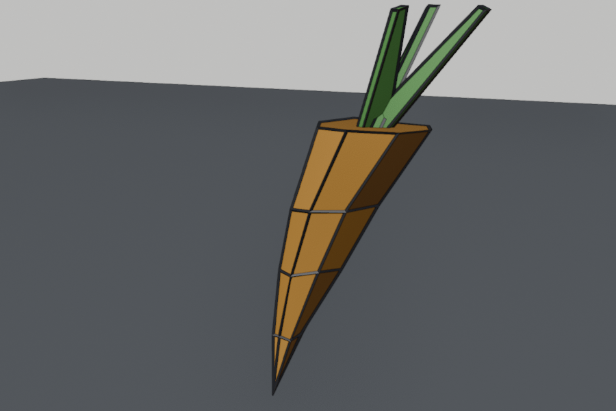
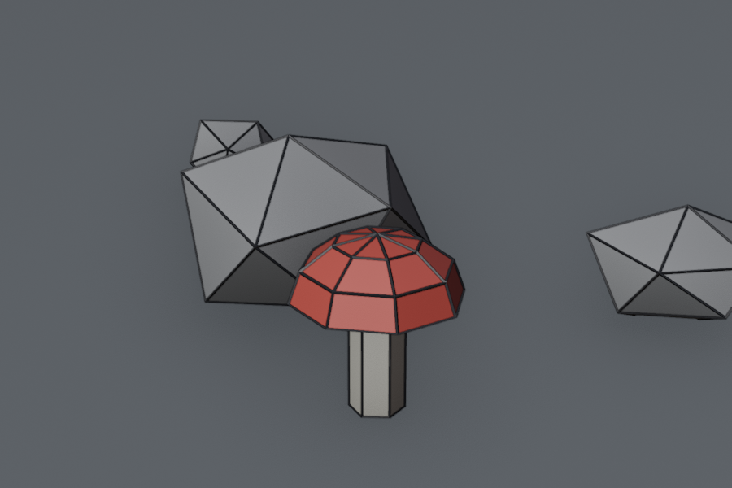
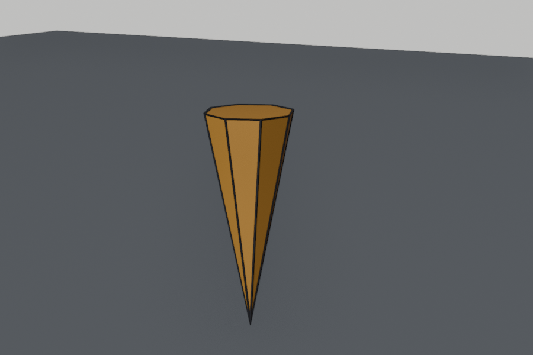
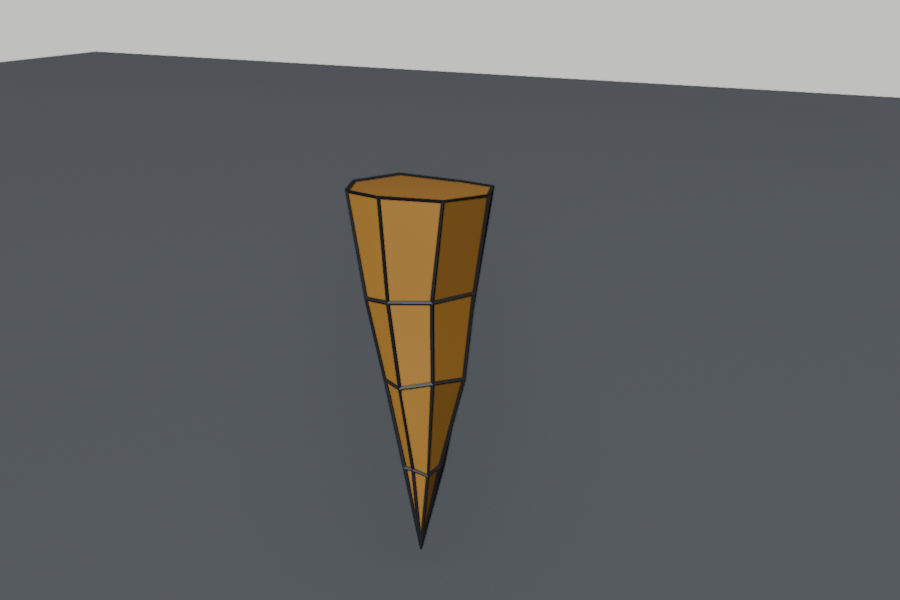
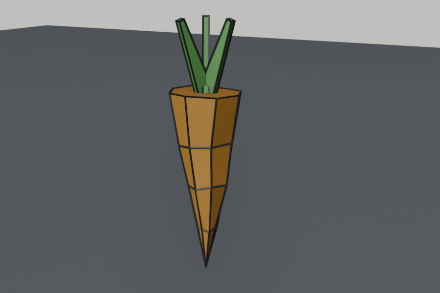
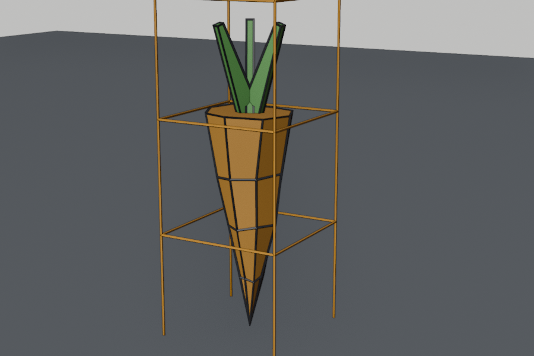
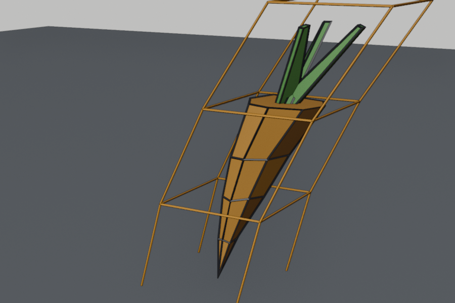
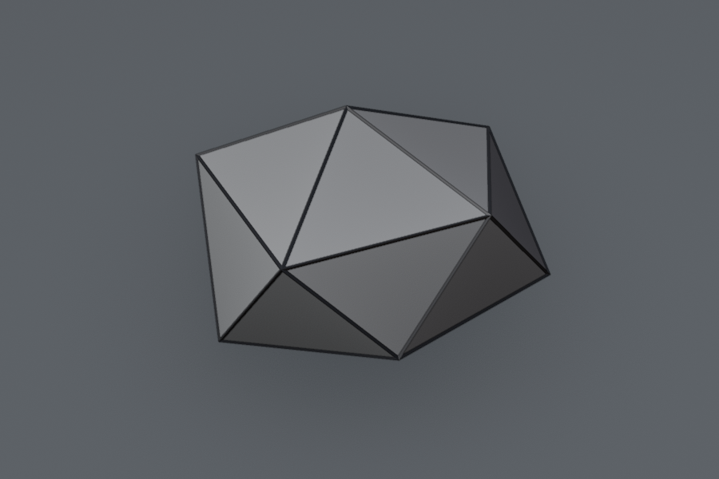
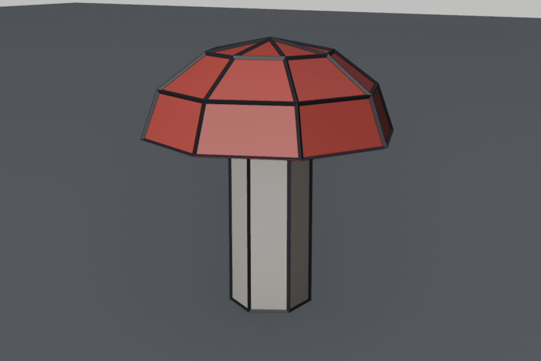

Lesson 14 · Blender track
Finishing the well, and the first rabbit-game props
Grant's well, Parts 3–5. After each video comes a small exercise that makes something for your daughters' game: a carrot, then a forest-floor kit.




Warm-up: from memory
From Lesson 13: what does an Empty do when it's used as a Mirror modifier's Mirror Object?
Show answer
The Empty's position sets the mirror line, so the object's own origin can stay where it is. Grant uses it again in Part 3 to mirror the roof tiles.From your campfire export: you have a modifier and unapplied transforms. Which do you apply first, and why?
Show answer
The modifiers first. Deform modifiers depend on the object's transform, so applying the transforms first scrambles the shape. (With direct.blend import into Godot you don't need to apply either.)Session 1: Part 3, then the carrot
Part 3: Roof tiles (13 min)
Timings come from the video's captions, so they're approximate.
| Around | Watch for |
|---|---|
| 00:00 Challenge | He suggests trying a tile yourself first. Do it: it's a scaled cube with a couple of loop cuts. |
| 01:00–02:30 One tile, then variants | Apply scale, loop cuts, a bevel, a small Randomize. Then a split tile: delete faces and refill them with F. |
| 04:30 Individual Origins | Rotating every tile around its own centre in one go. That's the Lesson 11 pivot point again. |
| 05:00–06:30 Randomize Transform | Key idea. Object → Transform → Randomize Transform nudges the location, rotation and scale of all selected objects by small random amounts. Lots of copies stop looking identical in one click. |
| 06:30 H / Alt+H | Hide and unhide objects. |
| 08:30 Mirror via the Empty | Your Lesson 13 sign technique, on the Y axis this time. |
| 09:30–13:00 Lattice | Key idea. A Lattice is a cage. Objects with a Lattice modifier pointing at it bend when you move the cage's points. The manual: it “deforms the base object according to the shape of a Lattice object”. Grant makes the roof sag with it, using proportional editing (O, the circle of influence) so neighbouring points follow smoothly. |
Exercise A: a bendy carrot
Practises: loop cuts and Randomize, Individual Origins (from Lesson 11), and the Lattice. Target: about 35 cm long plus leaves. That's big for a carrot, but it's a collectible a 4-year-old needs to spot from far away. Save it as blender/rabbit/carrot.blend.










- New file, delete the cube. Shift+A → Mesh → Cone. In Adjust Last Operation set Vertices
8, Radius 10(the bottom becomes the point), Radius 20.07, Depth0.35. Then G Z0.175so the tip touches the ground. Give it an orangeCarrotmaterial. - Tab. Ctrl+R over a vertical edge, scroll the mouse wheel up to 3 cuts, click, then RMB. Select the middle ring with Alt+click and press S
1.1for a slight bulge. Then A, and Mesh → Transform → Randomize with a tiny amount, about0.004. The carrot is small, so Grant's 0.01 would be too much. - Leaves (Object Mode): add a cube and shape it in Edit Mode into a thin leaf about 3.5 × 1 × 16 cm (use Dimensions, then Ctrl+A → Scale). Narrow its top end a little with S X. Put it on top of the carrot (Z about 0.42). Green
Leavesmaterial. Then the Lesson 11 trick: set the 3D cursor to the carrot's top centre, set the pivot to 3D Cursor, and Shift+D / RMB / R Z120twice. Select all three leaves, set the pivot to Individual Origins, and tilt them outwards a bit (R Y, about20). Some will lean the wrong way: fix those one at a time. - Lattice: set the pivot back to Median Point. Shift+A → Lattice, scale it with S / S Z until the cage surrounds the carrot and leaves. In its Lattice properties tab (the cage-shaped icon), set the resolution along the carrot's height to 4 (Grant explains U, V and W at 10:30: click each value and watch which direction gets more cuts). Then select the carrot: Add Modifier → Deform → Lattice, Object =
Lattice. Select the leaves, then the carrot last, and Ctrl+L → Copy Modifiers. - Bend: select the Lattice, Tab, front view, X-ray (Alt+Z). Turn on proportional editing (O). Box-select the top row of points and press G X. Scroll the wheel to grow or shrink the circle of influence until the carrot curves smoothly instead of kinking. Save.
Predict: you forget Ctrl+L → Copy Modifiers in step 4, then bend the lattice. What do you see?
Show answer
The carrot bends but the leaves don't, so the leaves float off the bent top. Only objects with a Lattice modifier follow the cage. Same idea as Grant's roof at 12:00: the wooden beam poked through until it got the modifier too.Why bend with a lattice instead of moving the carrot's own vertices?
Show answer
The lattice bends several objects at once (carrot and leaves) and stays editable: move the cage again later, or delete the modifier to get the straight carrot back. That's the non-destructive idea from your campfire question again.The carrot pictures were rendered from a Blender 5.2.2 script that follows these steps, including the lattice: moving the top row about 26 cm sideways tips the carrot's top about 15–20 cm over.
Session 2: Part 4, then the forest floor
Part 4: Winch, rope and rocks (13 min)
| Around | Watch for |
|---|---|
| 00:00 Challenge | He shows the winch and asks you to try it first. Have a go, even roughly. |
| 00:30–01:00 Low-sided cylinders | 5–6 sides make chunky, cartoon wood. Fewer sides means a stronger low-poly style. |
| 02:00 Frame Selected | He uses numpad .. You: View → Frame Selected. |
| 04:30 Rotate perpendicular to the view | R with no axis rotates around the axis pointing at you. In top view that's Z. |
| 05:00–08:30 Rope | Key idea. No fancy spiral needed: loop cuts, bevel them with an extra cut, scale the middle loops in, randomize. This is also where the order of Apply Scale and Randomize matters (07:30): with unapplied scale, “0.1” doesn't mean 10 cm. |
| 09:00 Alt+G | Clear location. You know it from Lesson 9. |
| 09:30–11:00 Rocks from an Icosphere | Subdivision 1, Randomize, then slide vertices into each other with GG and Auto Merge on. The manual: Auto Merge joins vertices “as soon as a vertex moves closer to another one than the Threshold setting”. |
| 11:30–12:30 Snapping to the floor | The magnet icon in the header, set to snap to Face. Grant's “Snap With: Center” is called Snap Base in your 5.2. Holding Ctrl while moving temporarily turns snapping on or off. This is how you'll place props on the forest ground. |
Exercise B: a forest-floor kit
Practises: Grant's rock method, low-sided cylinders, deleting half a mesh, and snapping. Save it as blender/rabbit/forest_floor.blend.




- New file. Add a Plane as the ground and make it 4 m across. Then add an Ico Sphere: Subdivisions
1, Radius0.22. Apply its scale before anything else (Grant's 07:30 lesson). - Tab, A, Randomize (try
0.03–0.05), then S Z0.7to flatten it. Optional: switch Auto Merge on (Sidebar N → Tool → Options) and GG-slide one or two vertices onto their neighbours for a less regular shape. GreyStonematerial. - Two more rocks: Shift+D the first, scale them smaller, and rotate them differently, as Grant does at 11:00. One rock rotated three ways already looks like three rocks.
- Stem: Cylinder with Vertices
6, Radius0.035, Depth0.16. PaleStemmaterial. - Cap: UV Sphere with Segments
8, Rings6, Radius0.11. In Edit Mode, front view and X-ray: box-select the bottom half of the vertices and press X → Vertices. Then select all and S Z0.75for a flatter dome. Put it on top of the stem. RedCapmaterial. (Want white spots later? Small flattened icospheres on the cap. Your girls will have opinions.) - Snap everything onto the ground: switch on snapping (magnet), choose Face, set Snap Base to Center for the rocks so they sink in a little, as Grant shows. Then G each prop over the plane. Arrange a little group like the picture. Save.
Predict: you skip applying the scale in step 1, but you'd scaled the icosphere ×3 in Object Mode. What does Randomize 0.05 do?
Show answer
The jitter is about 3× bigger than you expect, because the object's scale multiplies it. The rock comes out mangled. Grant demonstrates exactly this on the rope at 07:30.Session 3: Part 5, then colour
Part 5 (15 min)
I couldn't get this video's captions (YouTube kept blocking the download), so there's no chapter table this time. What I know: Part 4 ends with Grant saying the model is “ready for the texturing”, so Part 5 colours the well. Watch it the usual way, pausing and copying. Then hold it up against one fact from Lessons 8 and 12:
| Reaches Godot | Stays in Blender |
|---|---|
| Base Color, Metallic, Roughness, Emission on a Principled BSDF. An image texture plugged into Base Color also comes across (the glTF exporter reads it from the Principled BSDF node) | Procedural node setups (noise, mixes, colour ramps…), lights, world, compositing |
If Grant builds colour from complex node trees, that's fine for the render, but use simpler flat colours for game props. If he uses an image or colour palette with UVs, that technique does carry into your game.
Colour your props
- Apply whichever Part 5 technique fits your carrot, rocks and mushroom, keeping to what reaches Godot (table above). Kid-friendly rule: bright and saturated. The carrot must pop against a green-brown forest.
- Save all three files in
blender/rabbit/. Don't apply modifiers or join anything: in Lesson 15 Godot imports the.blendfiles directly, and the lattice bend comes along on its own.
If you'd like a proper “watch for” table for Part 5, tell me after watching. I'll try the captions again, or you can tell me what surprised you.
Recall: after all three sessions
Which tool makes a whole row of copied tiles stop looking identical in one go?
You moved a lattice point but nothing bent. Most likely cause?
What does the circle you resize with the mouse wheel do during proportional editing?
You want a rock to sit into the ground a little, not on top of it. Which snapping setup?
For next session (spaced recall)
- The lattice workflow in four steps: add, fit, modifier, bend.
- Grant's rock method, and why scale is applied first.
- From Lesson 13: the rule Simple Deform depends on.
Next: Lesson 15, the rabbit game begins in Godot. A new project, your player code copied over, a fixed follow camera, keyboard and gamepad, carrots to collect, and the first sounds. Your carrot and forest-floor files go straight in.
Lattice won't bend, leaves fly off, a rock looks melted, or a menu differs from Grant's 4.2? Tell me the step, or save and say “saved” and I'll inspect the file.